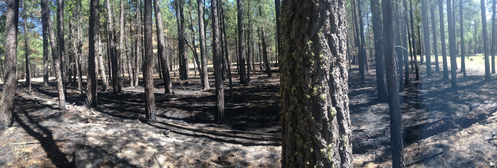
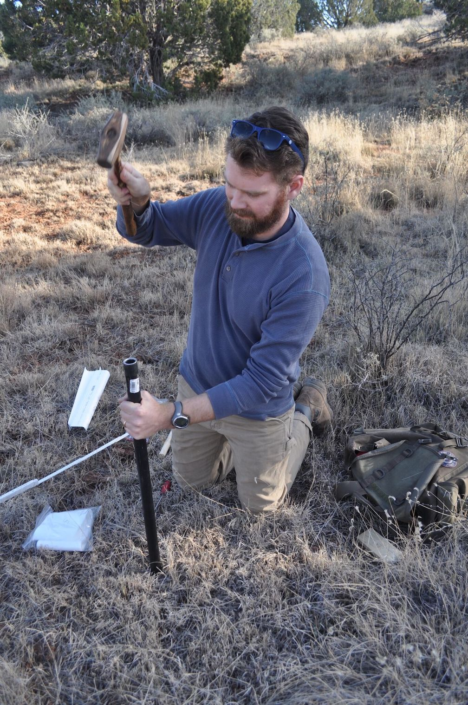

Prehistoric Fire and Land Use at Chavez Pass, Arizona
This project investigates the ecological consequences of population aggregation in the U.S. Southwest using geoarchaeological field methods and proxy modeling. Through joint research project with the Coconino National Forest in Flagstaff, Arizona, I have designed and implemented a multi-season field and laboratory project that evaluates charcoal evidence for changing local fire histories during a period of land-use intensification (A.D. 1050-1425) at the Chavez Pass Pueblos, in northern Arizona. This work has been used to test and calibrate GIS-based models of charcoal dispersion and deposition in an effort to better understand charcoal source areas and how they reflect changing land-use practices associated with aggregation. This project has also operated as a training opportunity for students, providing instruction in field methods and laboratory analysis of charcoal samples for two cohorts of undergraduates.
Associated Products
Papers
- Snitker, Grant
2015 - Anthropogenic Fire and Paleo-Charcoal Study at Chavez Pass, AZ: 2015 Report. Submitted to the Coconino National Forest Supervisor's Office, Flagstaff, AZ.
Software
- Snitker, Grant
2017 - GIS charcoal source area model for archaeological applications. R Script version 2.0. Electronic document,https://github.com/gsnitker/Charcoal_Source_Area.